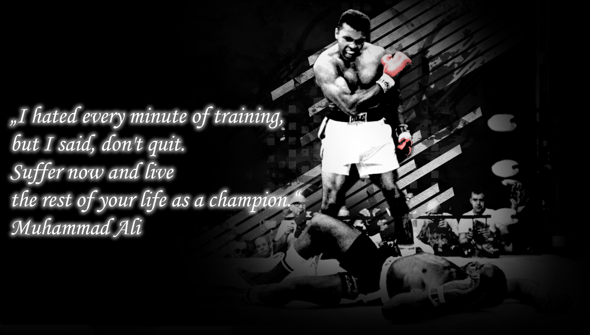

About Muhammad Ali
Muhammad Ali, born Cassius Marcellus Clay Jr. on January 17, 1942, was an American professional boxer, philanthropist, and social activist. He is widely regarded as one of the most significant and celebrated sports figures of the 20th century.
Known for his quick wit, charisma, and incredible boxing skills, Ali became a three-time heavyweight champion and won numerous titles throughout his career. His matches against Joe Frazier and George Foreman are considered some of the greatest in boxing history.
Outside the ring, Ali was a prominent civil rights activist and an outspoken advocate for social justice. He used his fame and platform to speak out against racial inequality, religious freedom, and the Vietnam War.
Muhammad Ali's legacy extends beyond boxing, as he continues to inspire generations with his athleticism, courage, and unwavering principles.
Muhammad Ali in Action
Muhammad Ali's Legacy
Ali's refusal to be drafted into the Vietnam War in 1967, based on his religious and moral objections, resulted in his boxing titles being stripped and a three-year suspension from the sport during the prime of his career. Undeterred, he stood by his principles and became an iconic symbol of opposition to the war.
After the Supreme Court overturned his conviction in 1971, Ali made a triumphant return to the boxing ring. He engaged in legendary bouts with Joe Frazier, George Foreman, and other top contenders, showcasing his unrivaled athleticism, agility, and tactical brilliance. Ali's strategy of "float like a butterfly, sting like a bee" became synonymous with his unique boxing style and contributed to his incredible success in the ring.
Muhammad Ali's impact extends far beyond his boxing career. His charisma, quick wit, and magnetic personality made him a global icon. He was not only a sports legend but also a tireless advocate for humanitarian causes. Ali worked passionately for civil rights, racial equality, and the promotion of peace and understanding among people of all backgrounds and beliefs.
Ali received numerous awards and accolades throughout his life, including the Presidential Medal of Freedom in 2005. Even after his retirement from boxing, he remained an inspiration to millions around the world. Muhammad Ali passed away on June 3, 2016, leaving behind an enduring legacy as a sporting legend, cultural icon, and champion for social justice.
-
Birth of Cassius Clay Jr. January 17, 1942 Cassius Clay Jr. was born in Louisville, Kentucky to parents Cassius M. Clay Sr. and Odessa O'Grady Clay.
-
Cassius Clay Jr. Wins His First World Heavyweight Championship Title February 25, 1964
-
Cassius Clay Jr. Becomes Muhammad Ali, Elijah Muhammad, the Nation of Islam leader, gives Cassius Clay a holy name - one that would make world history - Muhammad Ali.
-
"Fight of the Century", The first of three fights between Muhammad Ali and Joe Frazier, this match is widely regarded as the biggest fight in history. Joe Frazier won in fifteen rounds by a unanimous decision.
-
Super Fight II, Fight II, was the second boxing match in a series of three bouts between Muhammad Ali and Joe Frazier. Muhammad Ali won the match after twelve rounds.
-
Joe Bugner vs. Muhammad Ali in Kuala Lumpur, Joe Bugner challenged Muhammad Ali for the World Heavyweight Championship during the summer of 1975. The match took place in Kuala Lumpur, Malaysia, with Muhammad Ali winning after fifteen rounds in a unanimous decision.
-
World Heavyweight Championship Match Against Earnie Shavers, This heavyweight championship match between Muhammad Ali and Earnie Shavers took place at Madison Square Garden in New York City. Muhammad Ali won in the 15th round.
-
Muhammad Ali retires from boxing at the age of 39.
-
Muhammad Ali awarded the Ellis Island Medal of Honor
-
Amnesty International awards Muhammad Ali with the Lifetime Achievement Award.
-
Muhammad and Lonnie Ali Speak Before the United States Senate
-
Death of Muhammad Ali